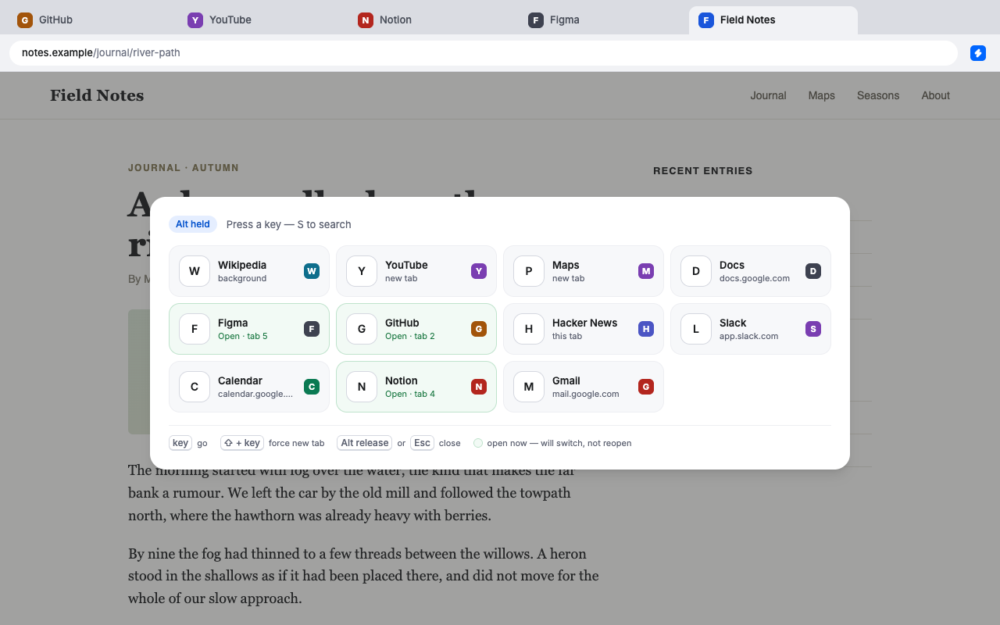
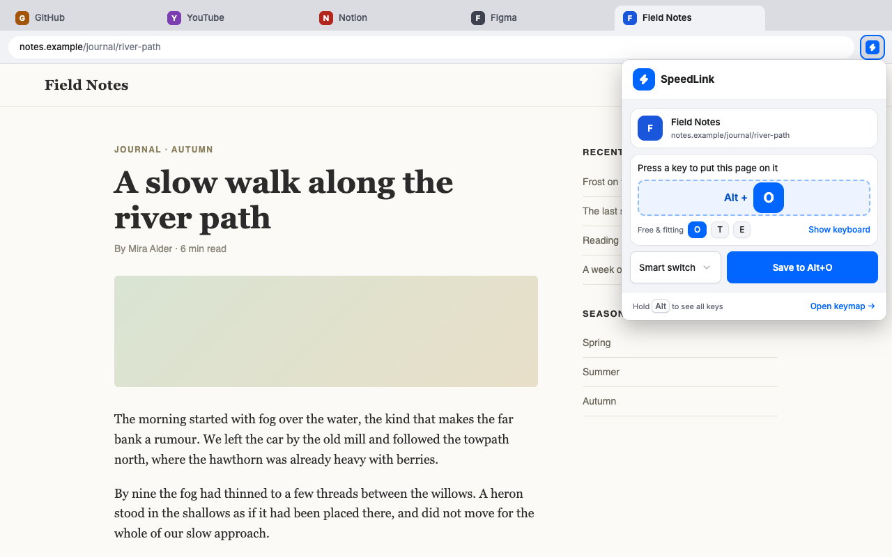
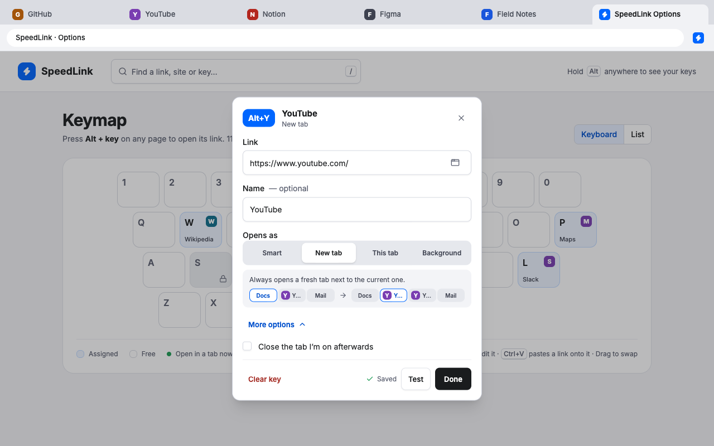

Put your sites on keys.
Hold ⌥ (Alt) and press a key to open a site, or jump to the tab where it’s already open.
Add to Chrome
Free · Open source
On your phone? and open it in Chrome on your computer.
Hold ⌥ (Alt) and press a key to open a site, or jump to the tab where it’s already open.
On your phone? and open it in Chrome on your computer.
Try it — click a key. In Chrome you’d hold ⌥ (Alt) and press it.
Click the toolbar icon and press a key. SpeedLink suggests free ones that fit the site.
On any page. If the site is already open you jump to that tab; if not, it opens.
Keep ⌥ held and your keys appear over the page. Let go to close.
The overlay lists your keys over the page you’re on. Sites open right now show in green. Press S to pin it and search by name or link.


Open the page, click the icon, press a key. If the key is taken, SpeedLink offers to move the old link.
Click a key to edit it right there, drag one key onto another to swap.

Jumps to the tab if it’s open, otherwise opens a new one. The default.
Always a fresh tab. Good for search pages and translators.
Replaces the page you’re on. Good for dashboards you cycle through.
Opens quietly and you stay where you are.
Private by designYour keymap stays in your browser and syncs only through Chrome’s own sync. No data collected, no analytics. Privacy policy
Open sourceRead the code or file an issue. Source on GitHub
Coming from SpeedLink 1?Your keys come over on update. Nothing to set up again.
Alt. It’s ⌥ Option on a Mac and Alt on Windows, Linux and ChromeOS.
Inside text fields SpeedLink does nothing, so ⌥ characters type as usual. Outside them, a key you’ve assigned opens its site.
Built and tested for Chrome. Edge, Brave and Arc can install it from the Chrome Web Store and usually work, but they aren’t tested.
In your browser. It syncs between your devices only through Chrome’s own sync.